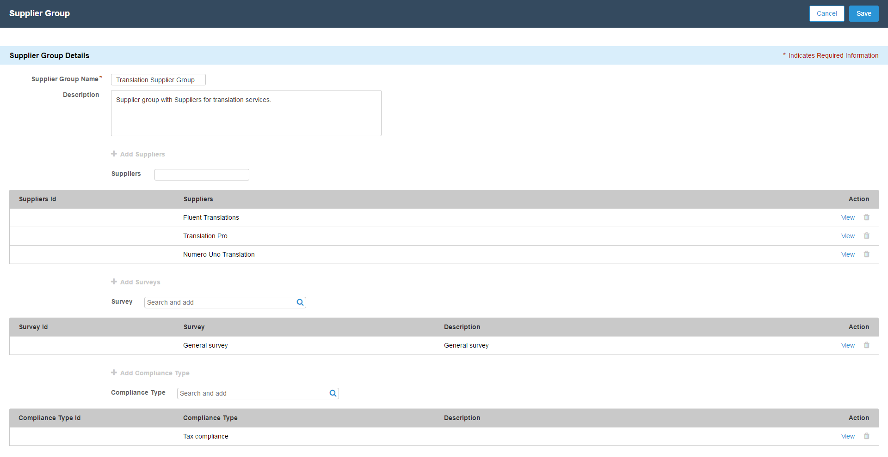

Creating Supplier Groups
A Supplier Group is a group of suppliers that a buyer can create by adding relevant suppliers in a group. You can associate Suppliers, Surveys, and Compliance Type to a survey group. You can utilize the supplier groups when you want to categorize your suppliers and want to associate various surveys and compliance type to a group of suppliers. For example, if you are a disinfecting wipes manufacturer; you can categorize the suppliers by adding them to Fabric Supplier Group, Chlorine Supplier Group, and Disinfectant Supplier Group. You can then add relevant suppliers in each group.
To create a supplier group
- Go to Supplier Group tab.
- Click New Supplier Group.
- Enter the name of the supplier group.
-
Click + Add Suppliers, to add suppliers to the supplier group.
- Type the supplier name in the Suppliers field. Select the supplier from the picklist to add to the supplier group.
- The name of the supplier is populated in suppliers list table.
- To add another supplier, clear the Suppliers field and type another supplier's name.
- To delete an added supplier from the list, click delete corresponding to the supplier you want to delete.
-
Click +Add Surveys, to add surveys to the supplier group.
- Type the survey name in the Survey field. Select the survey from the picklist to add to the supplier group.
- The name of the survey is populated in survey list table.
- To add another survey, clear the Survey field and type another survey name.
- To delete an added survey from the list, click delete corresponding to the survey you want to delete.
-
Click + Add Compliance Type, to add compliance type to the supplier group.
- Type the compliance type name in the Compliance Type field. Select the compliance type from the picklist to add to the supplier group.
- The name of the compliance type is populated in compliance type list table.
- To add another compliance type, clear the Compliance Type field and type another compliance type name.
- To delete an added compliance type from the list, click delete corresponding to the compliance type you want to delete.
